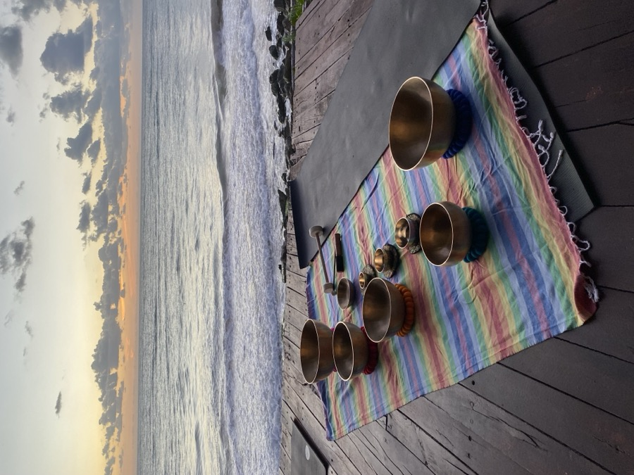
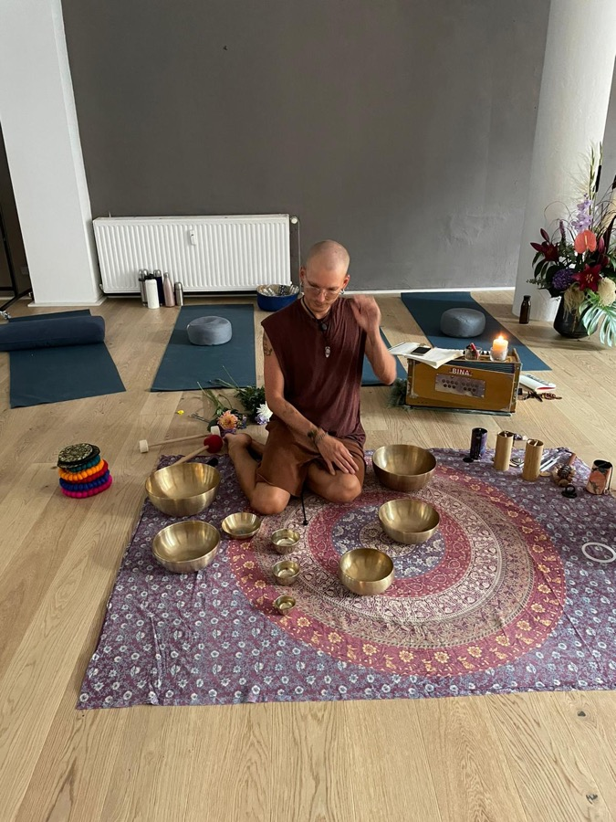
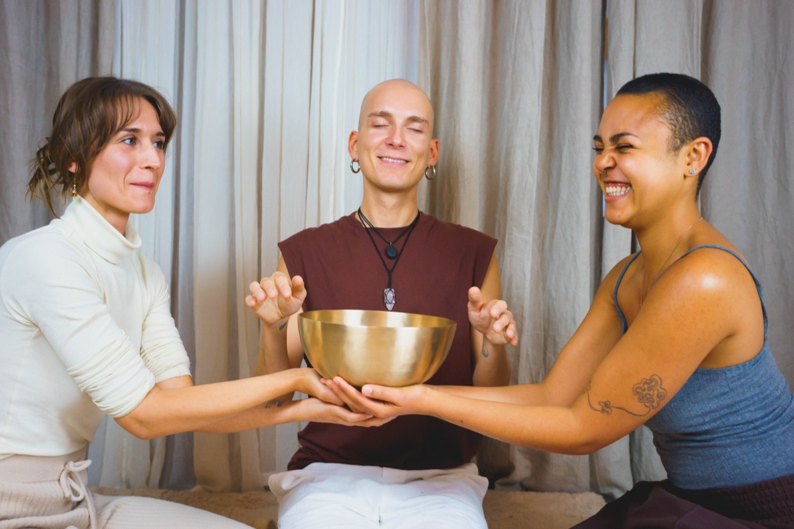
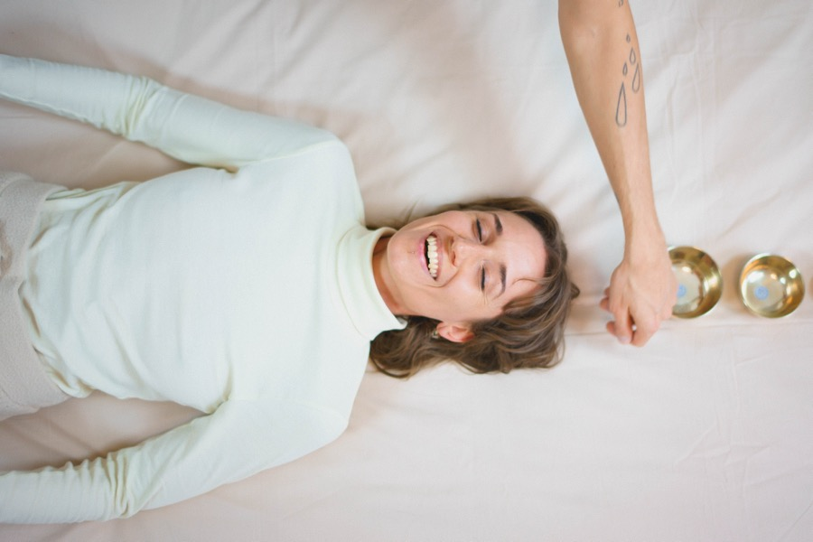
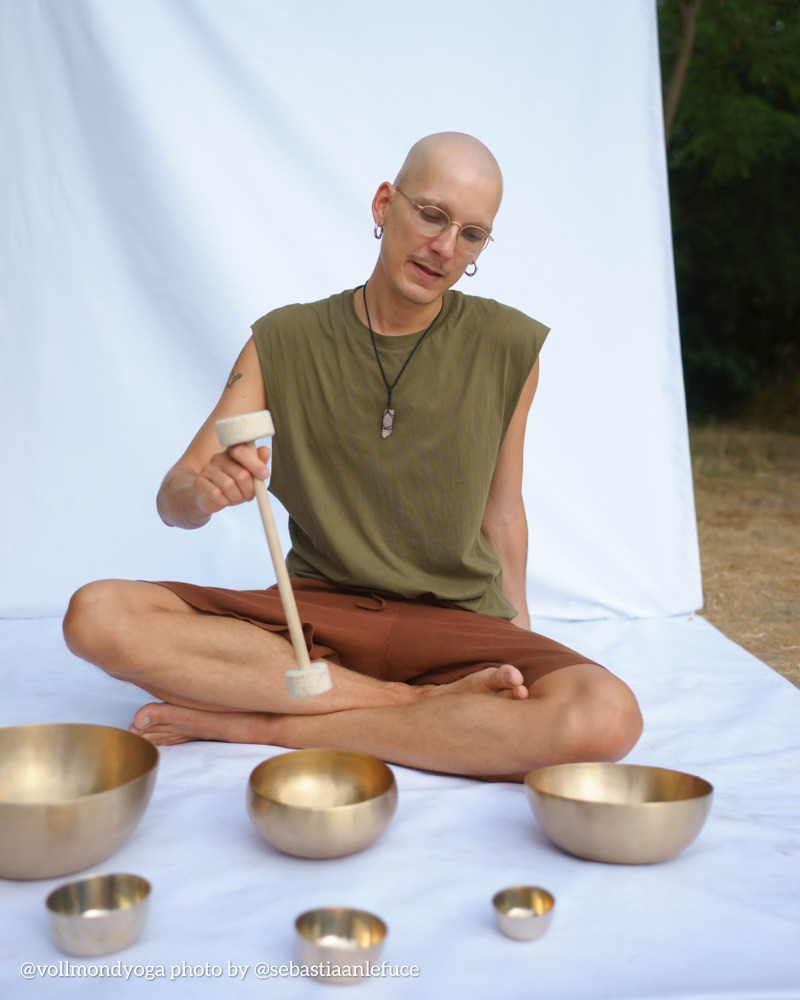
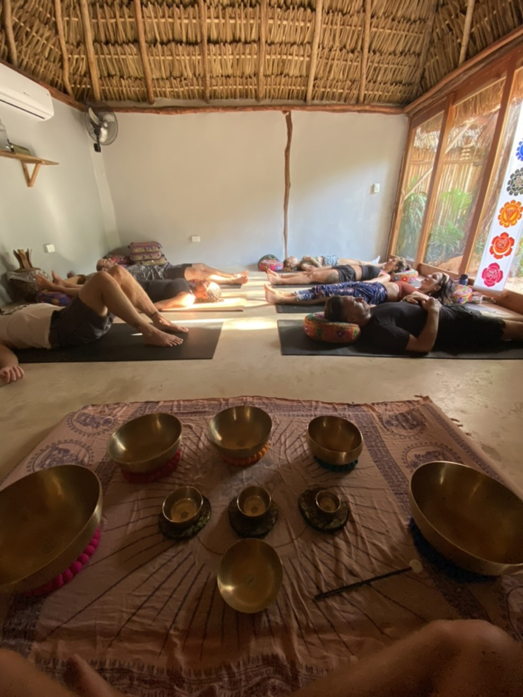
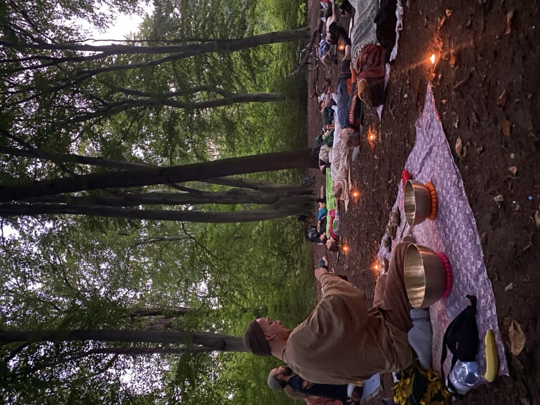
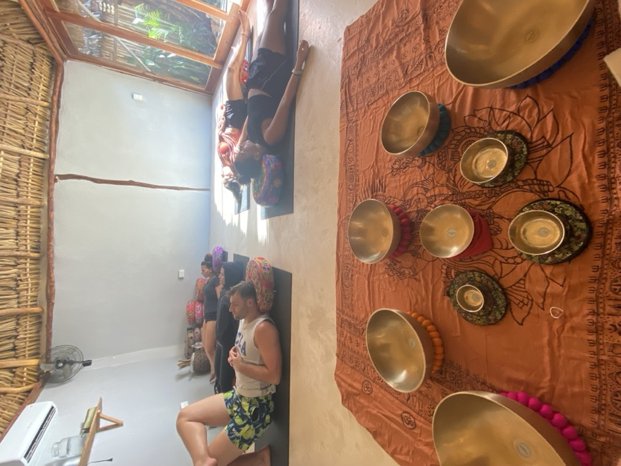
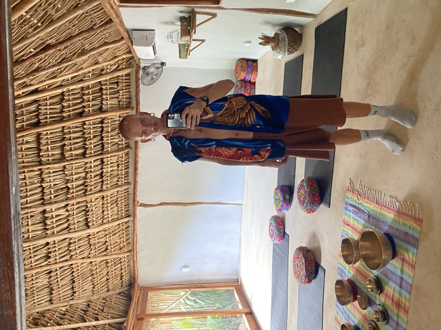

A small, practical training in Valencia. Two days of practising, until you can guide a complete sound bath of your own.
ApplySound Bath at Papaya Playa, Tulum
01 — Learn by doing
You practise on your own and in pairs, and you receive as many sound baths as you facilitate. The skill comes from your hands.


Hands-on from hour one · small groups · every round, feedback
02 — Who it's for
You don't need your own bowls, and you don't need any experience.
It probably isn't for you if you're after a quick certificate or a fixed formula to repeat. This is a practical craft, and it asks you to show up and play.
A sound bath doesn't need to be loud to be powerful.
03 — What you'll learn
You'll also understand the foundations behind the practice: nervous system regulation, brain waves, the role of rhythm, and where sound sits within modern wellbeing.


04 — The two days
Three parts: a theory evening online on the Friday, then two full days in the room at De Moon Yoga, Valencia. A small group, taught in English, with all the bowls provided.
The theory evening. We cover the foundations online, so both days in the room can be spent playing.
05 — Why I created this training
My job isn't to give you a formula. It's to help you trust your own judgement.
I wanted to teach for a long time before I felt ready. Other trainings felt overwhelming — some tried to cover every instrument, others stayed so broad people finished without knowing how to begin.
I wanted something simpler: one instrument, plenty of practice, honest feedback, and enough theory to understand why. By the end, you should feel ready to go home and hold your own sound bath.
06 — About me

I don't follow a fixed sequence. I respond to what's happening in the room.
I'm Adam. I first found sound in 2018, during one of the hardest periods of my life — it's what helped me feel like myself again. There isn't one perfect way to play; I want you to trust your own judgement and find a way of playing that feels like yours.
Experiencing the sound




07 — What's included
Two days, a small group, and you leave ready to lead your own sessions.
Apply08 — Voices
"I felt very safe with Adam. He has a beautiful energy and holds the space in the best of ways."
"Adam is a really nice and trustful person, so much warmness. It helped me be calm days after."
"I at once felt very comfortable and at ease. His presence is one of relaxation and professionalism."
09 — Price
10 — FAQ
No. Beginners are welcome, and so are teachers and bodyworkers who want to go deeper. What matters is that you want to practise.
No. Bowls to practise on during the training are provided. I'll also show you how to choose your own when you're ready.
You get a certificate of completion for the training.
Yes. By the end of the training, you'll have facilitated your own complete sound bath as part of the course. You'll leave with practical experience, personal feedback and the confidence to begin leading your own sessions.
Absolutely. Many participants join to bring sound into their yoga classes, massage practice or other wellbeing work. Others come because they want to start offering sound baths as a new path. The training is designed to help you develop your own way of facilitating rather than follow a fixed formula.
If you book more than 14 days before the training, you have a 14-day cooling-off period after your booking is confirmed. After that period, payments are non-refundable. If you cancel before the training begins, we may refund any amount paid above the deposit, but the deposit itself is always non-refundable. Once the training has started, no payments are refundable. Please see our Terms & Conditions for full details.
Comfortable clothes, a water bottle and something to take notes with if you'd like. Everything else, including the bowls, is provided.
If you're looking for a practical way to start facilitating sound baths, I'll see you in Valencia.
Apply